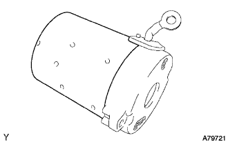
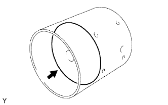
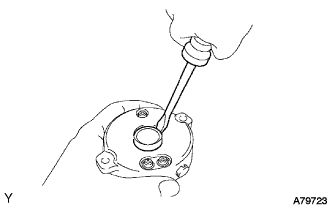
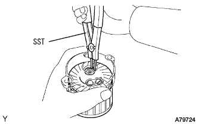
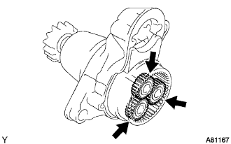

Starter Assembly (2GR-FE) Disassembly |
| 1. Remove Repair Service Starter Kit |
 |
Remove the nut and disconnect the harness from terminal C.
 |
Remove the 2 screws and the repair service starter kit from the starter motor terminal kit.
Remove the return spring.
Pull the plunger to disengage it from the lever, and remove the plunger from the drive lever pin.
| 2. Remove Starter Yoke Assembly |
 |
Remove the 2 through bolts and the starter yoke assembly w/ starter commutator end frame assembly from the starter motor terminal kit.
 |
Remove the starter yoke assembly from the starter commutator end frame assembly.
| 3. Remove Starter Armature Plate |
 |
Remove the starter armature plate from the starter yoke assembly.
| 4. Remove Starter Commutator End Frame Cover |
 |
Using a screwdriver, remove the starter commutator end frame cover from the starter commutator end frame assembly.
| 5. Remove Starter Armature Assembly |
Secure the starter commutator end frame assembly with aluminum plates in between.
 |
Using SST, remove the snap ring, and remove the starter armature assembly and washer from the starter commutator end frame assembly.
| 6. Remove Starter Planetary Gear |
 |
Remove the 3 starter planetary gears from the starter motor terminal kit.